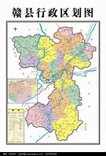

赣县

赣县区位于江西省南部，赣州市中部，赣江上游，东邻于都县、安远县，南接信丰县，西连章贡区、南康区，北与兴国县、吉安市万安县接壤。总面积2993.09平方千米，占赣州市总面积的7.6%，占江西省总面积的1.8%。赣县区是江西最早建县的18个古县之一，历史悠久，拥有2200多年的历史。赣县区因《山海经》所记“南方有赣巨人”而得
名“赣县”，境内风景优美，被誉为“客家摇篮”、“千里赣江第一县”、“中国板鸭之乡”。赣县区历史悠久，是江西最早建县的18古县之一，境内至今还保有汉朝契真寺、晋朝储君庙、唐朝宝华寺等众多历史名胜古迹。
同时，赣县区还是世界客家文化、东河戏的发祥地之一，白鹭古村远近闻名，建有江西客家博物院，是江西省第一座全方位展示客家民俗文化的专题博物院。
此外，赣县区还是中央苏区的全红县和核心县份之一，走出了8位共和国将军，是开国上将赖传珠的故乡。赣县区在20世纪20年代初到1949年8月14日赣县解放期间，为中国革命胜利和新中国建立作出巨大牺牲和重大贡献。